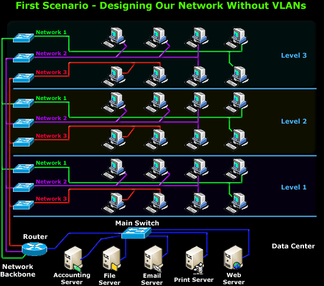
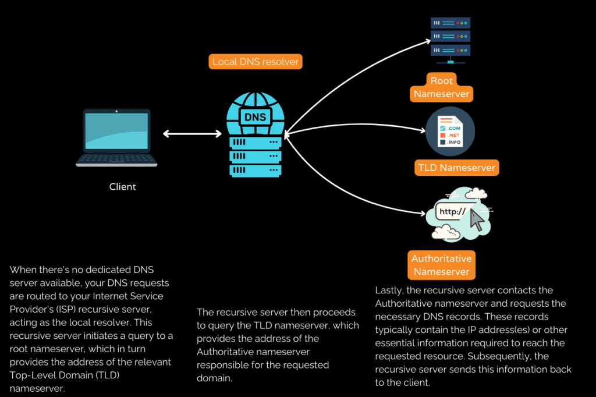
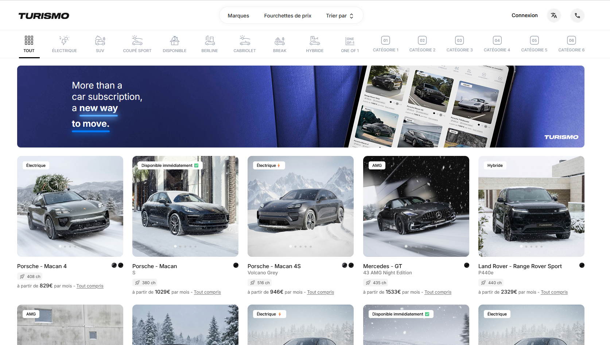

Configuration VLANs & ACL Cisco
Contexte : Projet de TP / IUT
Objectif : Isoler plusieurs départements réseau avec VLANs, DHCP, NAT et sécurisation via ACLs.
Technos : Cisco CLI, Packet Tracer
Réalisation : Routage inter-VLAN, serveur DHCP, NAT statique/dynamique, ACLs de filtrage, tests de connectivité

Serveur DNS + Routage Statique Debian
Contexte : Projet personnel
Objectif : Mettre en place un serveur DNS BIND9 avec routage multi-interface
Technos : Linux Debian, BIND9, ip route
Réalisation : Configuration BIND, zones directes/inverses, scripts de démarrage, routage IPv4/IPv6

Application web de location de voitures (PHP / SQL)

Contexte : SAE 203 – Projet de groupe (BUT Réseaux & Télécommunications)
Objectif : Concevoir une application web dynamique permettant la gestion complète d’un service de location de voitures.
Technologies : PHP, SQL (MySQL), HTML, CSS
Réalisation :
Conception et modélisation de la base de données relationnelle (voitures, catégories, clients, réservations, utilisateurs),
développement des fonctionnalités CRUD (ajout, modification, suppression),
filtrage des véhicules par catégorie et marque,
mise en place d’un système de gestion côté serveur et structuration du code PHP.